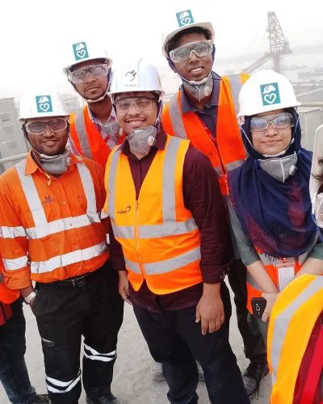
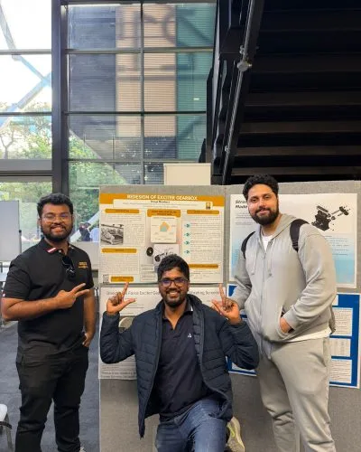
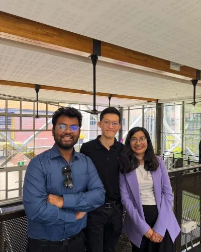
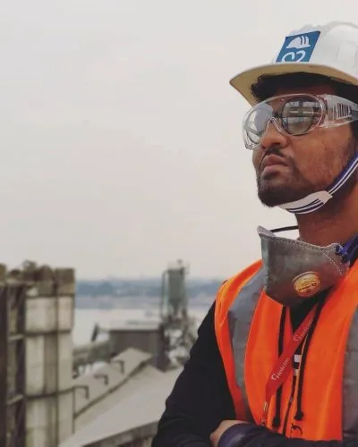
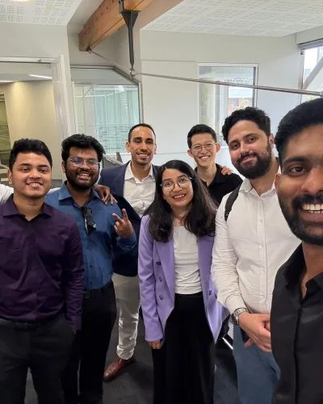
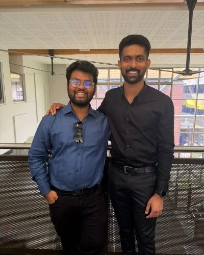
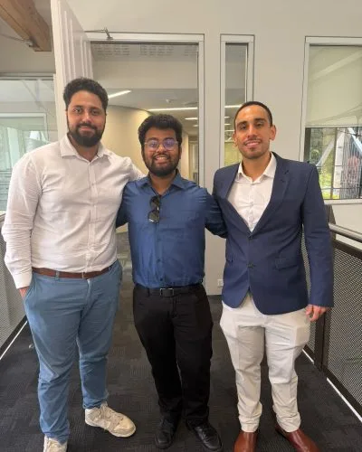

Engineering Outputs
Designing and developing engineering systems from concept to implementation, focused on performance, reliability and practical solutions using analytical methods and modern tools.
I'm Rifat — a Mechanical Engineer who bridges theory and the shop floor. From FEA and system modelling to production lines running fifty tons a week, I build engineering solutions that hold up under load.
I'm a Mechanical Engineering graduate driven to apply engineering ideas to practical, real-world systems. My work spans engineering analysis, system modelling and performance evaluation — always with an eye on reliability and the constraints that matter once a design leaves the screen.
My core strengths are engineering analysis, system modelling, finite element analysis (FEA) and technical problem-solving, backed by hands-on experience with experimental setups and data evaluation. My goal is to contribute high-quality solutions inside multidisciplinary teams — with analytical rigour and clear communication.
Outside of engineering I play keyboard, which keeps me creative and sharpens the teamwork and stage-communication that translate straight back into the team room.
Designing and developing engineering systems from concept to implementation, focused on performance, reliability and practical solutions using analytical methods and modern tools.
Performing simulations and analytical modelling to evaluate system behaviour and improve performance — computational modelling and data-driven evaluation for engineering decisions.
Building digital models of components and systems to support design exploration, analysis and visualization — translating concepts into clear technical representations.
Analysing complex systems and developing innovative technical solutions, combining computational modelling, experimentation and analytical methods to explore new approaches.
Curtin University · Perth, Australia
LafargeHolcim · Meghna Cement Plant
Military Institute of Science & Technology (MIST)
SOS Herman Gmeiner College
LafargeHolcim · Meghna Cement Plant
A MATLAB-based project on modelling and optimization of membrane distillation systems for freshwater generation — focused on performance improvement within design and safety constraints.
Synthesis and analysis of Al₂O₃, ZnO and GO nanoparticle-enhanced deionized water as a heat transfer fluid — preparation and characterization of nanofluids, measurement of heat transfer coefficient and viscosity, with the best performer identified via machine-learning.
Machined alloy-steel shaft — reducing stress risers through geometry.
Sizing, load analysis and design of a power-transmission gearbox.
Design and build of an autonomous racing vehicle platform.
Establish a clear understanding of the problem — objectives, technical requirements and operational constraints — through research and engineering principles.
Develop analytical and computational models to evaluate behaviour and predict performance under defined operating conditions.
Validate results through testing or simulation and communicate insights through structured technical documentation.
"Rifat worked on modelling and optimisation of a membrane distillation system for freshwater generation during his master's thesis. He showed good problem-solving ability and handled the MATLAB modelling and analysis with care. It was a pleasure supervising his work."
"Rifat demonstrated strong analytical thinking and dedication during his undergraduate thesis on nanofluid-enhanced heat transfer. He successfully designed experiments, analysed thermal performance data, and showed a solid understanding of heat transfer and experimental research."







Open to engineering roles and collaboration. The fastest way to reach me is email — or grab a slot for a quick call.